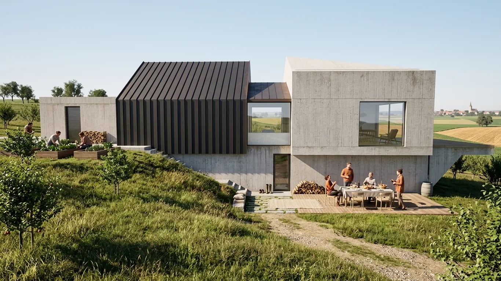
Event Center, Trnava
Trnava, Topola, Serbia, 2026
An event center in the middle of an orchard in Trnava, near Topola. When there is no event, it works as a restaurant, and two small guest houses beside it let guests stay overnight. The design is entirely by QBCARCHITECTS.
The project started from the orchard, not from a building type. We studied how guests arrive, where they wait, where they want a view of the trees and where a celebration needs to spill outside. The hall is laid out around those patterns: one open space without unnecessary partitions, large glazed walls towards the orchard, and a cantilevered terrace that carries the event out over the grass.
The building is in the permit stage.
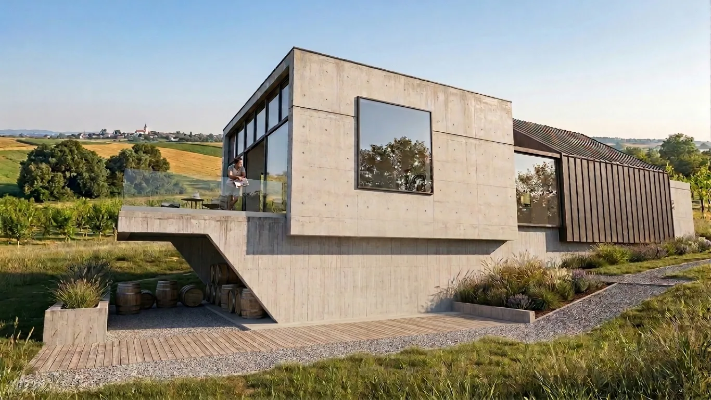
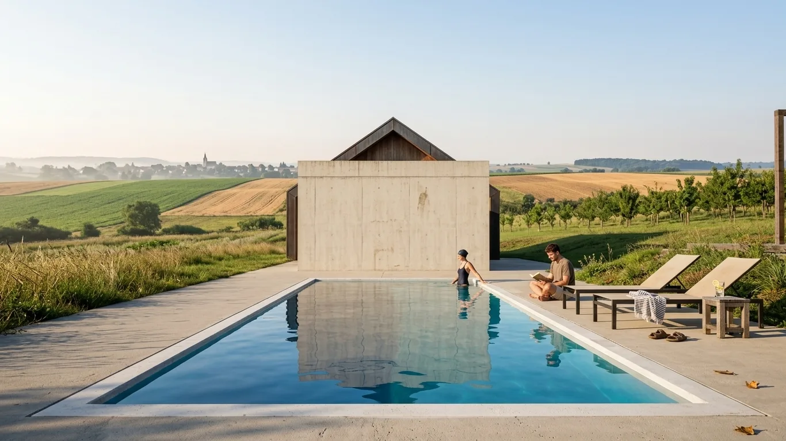
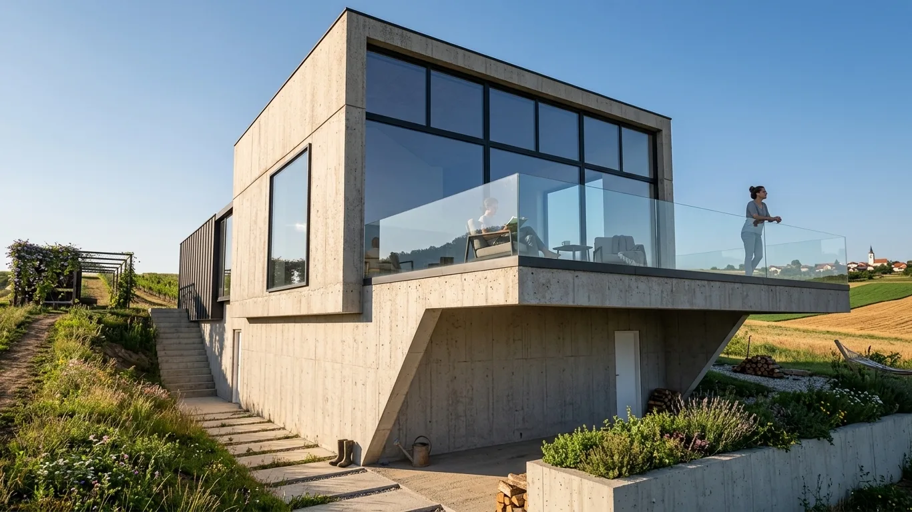


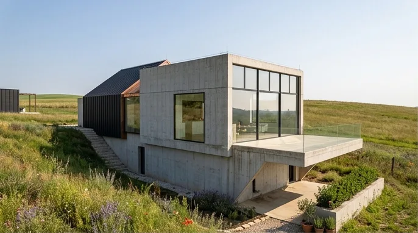
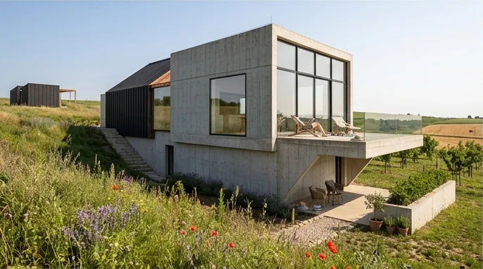
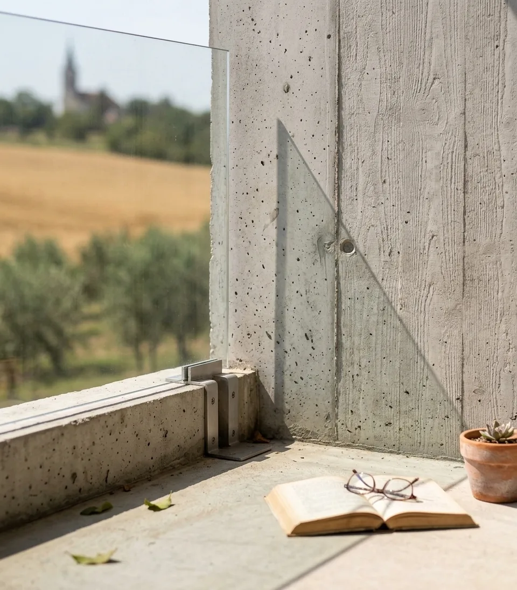
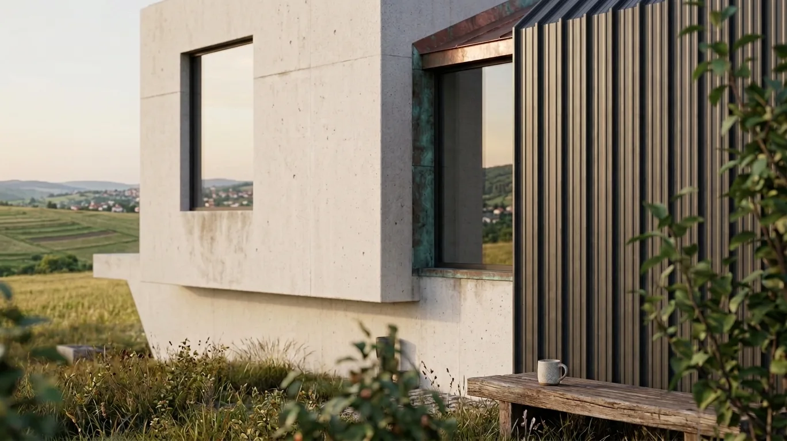
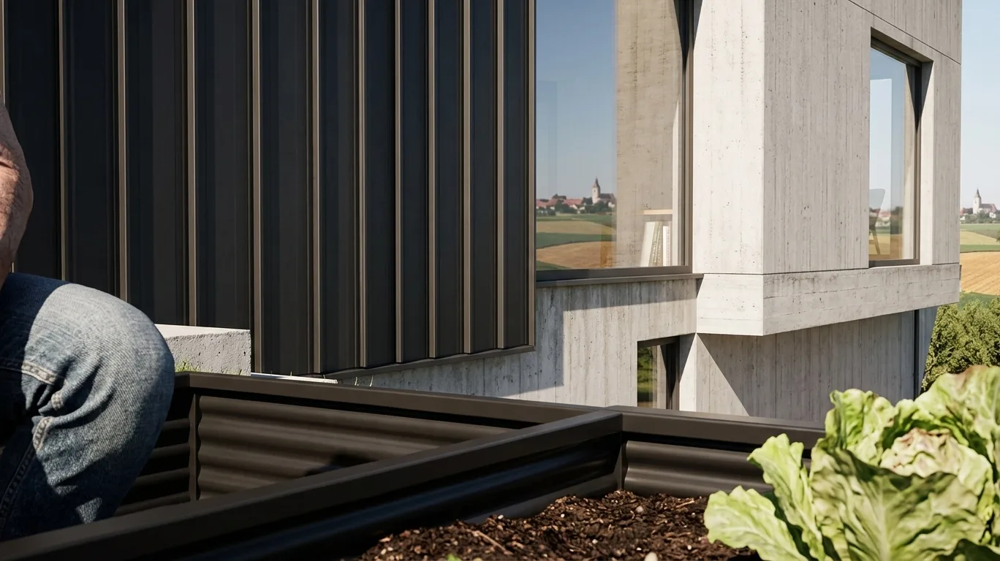
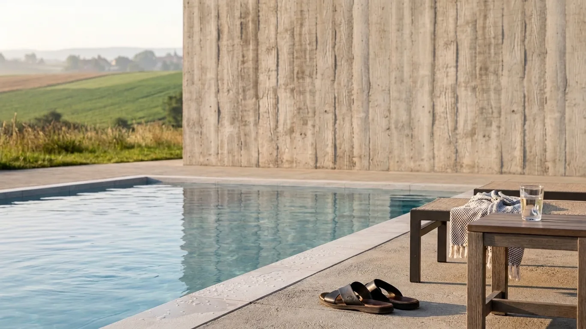
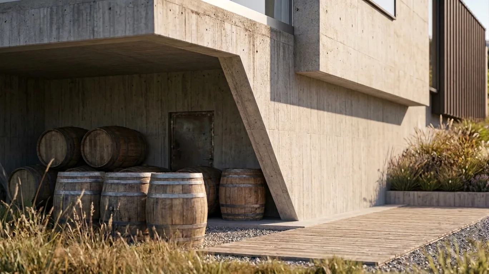